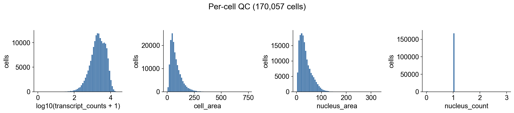
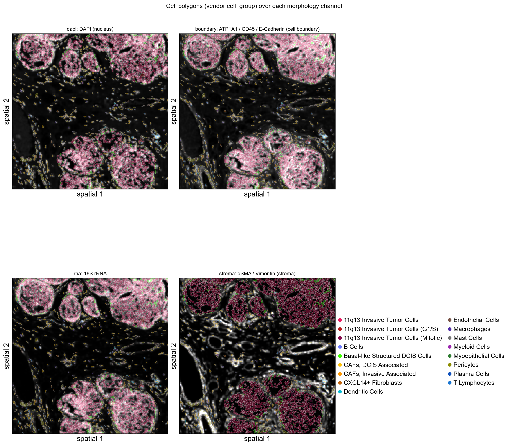

Spatial
Analyze 10x Atera (WTA Preview) FFPE breast cancer data
Atera is 10x Genomics' next-generation, in-situ, whole-transcriptome assay built on top of the Xenium platform. Compared with Xenium's gene-panel chemistry, Atera v1 expands coverage to ~18,000 human gene targets while keeping the cell-segmentation, polygon, and OME-TIFF morphology imaging that Xenium tutorials are written against.
An Atera outs/ bundle ships a Xenium-format core plus three additions:
| File / folder | Origin | Notes |
|---|---|---|
cell_feature_matrix.h5 | shared | gene × cell sparse counts (10x HDF5) |
cells.parquet | shared | per-cell metadata + centroids (microns) |
cell_boundaries.parquet | shared | per-cell polygon vertices |
experiment.xenium | shared | pipeline metadata (JSON) |
nucleus_boundaries.parquet | Atera-only | per-cell nucleus polygon vertices |
morphology_focus/ch####_<tag>.ome.tif | Atera-only | named multi-stain images (DAPI, ATP1A1+CD45+E-Cad, 18S, αSMA+Vim) |
*_cell_groups.csv | optional | vendor-shipped cell-type classifier (cell_id → group → display color) |
*_he_image.ome.tif + *_he_alignment.csv | optional | registered H&E whole-slide image and 3×3 affine |
OmicVerse's ov.io.spatial.read_atera mirrors read_xenium plus loaders for the four Atera-only items. This notebook walks through:
- loading an Atera FFPE breast-cancer bundle into a single
AnnData, - inspecting the four morphology stain channels,
- plotting the vendor-supplied cell-type segmentation in spatial coords,
- zooming into a small region with
ov.pl.spatialsegto render cell polygons, - running standard preprocessing (filter, normalize, HVG, PCA),
- plotting per-gene spatial expression for canonical breast-cancer markers.
Environment setup
import omicverse as ov
ov.style(font_path='Arial')
%load_ext autoreload
%autoreload 2ov.settings.cpu_gpu_mixed_init()Inspect the Atera bundle
Atera ships its primary outputs as a single outs.zip. For tutorials we extract the small files (matrices, parquet, JSON) plus the four morphology focus channels — the giant morphology.ome.tif (~15 GB, full multi-z stack) and transcripts.parquet (~10 GB) are not needed for cell-level downstream analysis.
Companion files (cell_groups CSV, H&E image + alignment CSV) sit *next to* outs/ in the public 10x dataset page rather than inside it.
from pathlib import Path
ATERA = Path("data/atera_breast_cancer")
# Show top-level files + the morphology_focus channel TIFFs (skip GB-scale OME-TIFFs).
for p in sorted(ATERA.iterdir()):
if p.is_dir():
print(f" {p.name}/")
for k in sorted(p.iterdir()):
print(f" {k.name} ({k.stat().st_size / 1024**2:,.1f} MB)")
else:
size_mb = p.stat().st_size / 1024**2
# Skip the multi-GB H&E OME-TIFF and outs.zip from the printout.
if size_mb < 500:
print(f" {p.name} ({size_mb:,.1f} MB)")
else:
print(f" {p.name} ({size_mb / 1024:,.1f} GB) # large, not loaded directly")
Load the dataset with read_atera
read_atera returns an AnnData with:
X: cells × genes sparse counts (control probes / codewords are dropped automatically; onlyGene Expressionfeatures are kept).obsm['spatial']: cell centroids in microns.obs: cells.parquet metadata, plusgeometry(cell polygon WKT),nucleus_geometry(nucleus polygon WKT), and — whencell_groups_csvis passed —cell_groupandcell_group_colorcolumns from the vendor's classifier.uns['spatial'][library_id]:images['hires'](the chosen morphology channel), scalefactors that map microns → image pixels, and the fullexperiment.xeniummetadata dict.
We start by selecting the dapi channel for the morphology image. Atera multi-channel selection accepts either a semantic tag ('dapi', 'boundary', 'rna', 'stroma'), a substring ('cd45', '18s'), or an integer-as-string index ('0'–'3').
adata = ov.io.spatial.read_atera(
ATERA,
image_key='dapi',
image_max_dim=2048,
cell_groups_csv=ATERA / 'WTA_Preview_FFPE_Breast_Cancer_cell_groups.csv',
cache_file=ATERA / 'atera_dapi.h5ad',
)
adataThe experiment.xenium metadata is preserved verbatim under uns['spatial']['<library>']['metadata']. The pixel_size field (in microns) defines how spatial centroids are converted into image-pixel coordinates downstream.
library_id = list(adata.uns['spatial'].keys())[0]
meta = adata.uns['spatial'][library_id]['metadata']
for k in ['run_name', 'region_name', 'preservation_method', 'panel_name',
'panel_num_targets_predesigned', 'chemistry_version', 'pixel_size',
'num_cells', 'transcripts_per_cell']:
print(f" {k:30s} {meta.get(k)}")
Quick QC: per-cell distributions
Atera's cells.parquet already carries per-cell transcript_counts, cell_area, and nucleus_count. A first sanity check is to verify the distributions look reasonable: a mean of ~2,000 transcripts/cell with cell areas in the tens of µm² is typical for Atera v1.
import matplotlib.pyplot as plt
import numpy as np
import pandas as pd
fig, axes = plt.subplots(1, 4, figsize=(15, 3.2))
for ax, (col, log) in zip(axes, [
('transcript_counts', True),
('cell_area', False),
('nucleus_area', False),
('nucleus_count', False),
]):
vals = adata.obs[col].astype(float).to_numpy()
if log:
vals = np.log10(vals + 1)
ax.set_xlabel(f'log10({col} + 1)')
else:
ax.set_xlabel(col)
ax.hist(vals, bins=60, color='#4477aa', edgecolor='white', linewidth=0.3)
ax.set_ylabel('cells')
ax.spines[['right', 'top']].set_visible(False)
fig.suptitle(f'Per-cell QC ({adata.n_obs:,} cells)', y=1.02)
fig.tight_layout()
plt.show()
Inspect the four morphology channels
Atera ships morphology imaging as four separate stain channels rather than a single composite. Each channel is a standalone OME-TIFF pyramid:
| Channel | Stain | Purpose |
|---|---|---|
ch0000_dapi.ome.tif | DAPI | nucleus |
ch0001_atp1a1_cd45_e-cadherin.ome.tif | ATP1A1 + CD45 + E-Cadherin | cell boundary |
ch0002_18s.ome.tif | 18S rRNA | RNA / cell mass |
ch0003_alphasma_vimentin.ome.tif | αSMA + Vimentin | stromal cells |
We re-read the bundle with each channel in turn. read_atera only loads the morphology image — the matrix and metadata reuse from cache_file are *not* triggered when re-reading directly from the source path with a different image_key, but image loading is cheap (~15 s per channel at 2048 px max) so we just call it four times.
channel_keys = [('dapi', 'DAPI (nucleus)'),
('boundary', 'ATP1A1 / CD45 / E-Cadherin (cell boundary)'),
('rna', '18S rRNA'),
('stroma', 'αSMA / Vimentin (stroma)')]
channel_imgs = {}
for key, _ in channel_keys:
a = ov.io.spatial.read_atera(
ATERA, image_key=key, image_max_dim=2048,
load_boundaries=False, load_nucleus_boundaries=False,
)
channel_imgs[key] = a.uns['spatial'][library_id]['images']['hires']
# Register every channel under a semantic key so ov.pl.spatialseg can use any
# of them as background via `img_key=...`. ov.pl.to_rgb_grayscale converts each
# 2-D channel to a contrast-clipped RGB stack — without this matplotlib's
# default viridis colormap kicks in and washes the per-channel structure into
# a uniform purple background. All four channels share the same
# `tissue_hires_scalef` (loaded at the same `image_max_dim`).
spatial_block = adata.uns['spatial'][library_id]
scalef = spatial_block['scalefactors']['tissue_hires_scalef']
for key, _ in channel_keys:
spatial_block['images'][key] = ov.pl.to_rgb_grayscale(channel_imgs[key])
spatial_block['scalefactors'][f'tissue_{key}_scalef'] = scalef
spatial_block['images']['hires'] = spatial_block['images']['dapi']
print('available background channels:', list(spatial_block['images']))fig, axes = plt.subplots(2, 2, figsize=(12, 12))
for ax, (key, title) in zip(axes.flat, channel_keys):
img = channel_imgs[key]
# Per-channel 99th-percentile contrast clip — Atera stains have a long tail
# of bright outliers that flatten the rest of the image if not clipped.
vmax = np.percentile(img[img > 0], 99) if (img > 0).any() else img.max()
ax.imshow(img, cmap='gray', vmin=0, vmax=vmax)
ax.set_title(f'{key}: {title}', fontsize=10)
ax.set_xticks([]); ax.set_yticks([])
fig.suptitle(f'Atera morphology focus channels ({img.shape[1]}×{img.shape[0]} px)',
y=0.94, fontsize=11)
fig.tight_layout()
plt.show()
Vendor cell-group spatial map
Atera ships a CSV mapping every cell_id to a curated cell-type label and a display color (*_cell_groups.csv). The 10x team produces these labels with a downstream classifier on top of the segmentation, and they make a useful sanity reference for our own clustering later.
We plot every cell as a tiny dot using its centroid and the vendor color directly.
print(adata.obs['cell_group'].value_counts().head(10))
print()
print(f"{adata.obs['cell_group'].nunique()} groups in total")# Pull vendor display colours into uns['cell_group_colors'] so ov.pl.spatial
# uses them as the categorical palette automatically.
ov.pl.sync_categorical_palette(adata, key='cell_group', color_obs='cell_group_color')
ov.pl.spatial(
adata,
color='cell_group',
img_key=None,
size=10,
show=False,
)
plt.gcf().suptitle(f'Vendor cell-group classifier ({adata.n_obs:,} cells, '
f"{adata.obs['cell_group'].nunique()} groups)",
y=1.02, fontsize=11)
plt.show()
Render cell polygons in a small region
ov.pl.spatialseg reads the WKT polygons stored in obs['geometry'] and renders each cell as its segmentation outline. Plotting all 170k polygons at once would dwarf the visible features, so we subset to a 1 mm × 1 mm window first.
Background image selection: by registering all four morphology channels under semantic keys ('dapi', 'boundary', 'rna', 'stroma') in uns['spatial'][lib]['images'], ov.pl.spatialseg can render polygons over *any* channel via img_key=.... For the cell-segmentation view the boundary channel (ATP1A1+CD45+E-Cadherin membrane stain) is the most informative — the polygons trace exactly the structures the stain lights up.
# Pick a 1 mm × 1 mm window centred on the densest tumour patch and reuse
# the same window for both the cell subset and the spatialseg crop_coord —
# this keeps the rendered background image aligned to the polygon extent.
x0, y0 = np.median(adata.obsm['spatial'], axis=0)
crop_window = (x0 - 500, x0 + 500, y0 - 500, y0 + 500) # (x0, x1, y0, y1)
bdata = ov.space.subset_window(adata,
xlim=(crop_window[0], crop_window[1]),
ylim=(crop_window[2], crop_window[3]))
print(f'Subset window: {bdata.n_obs:,} cells')fig, axes = plt.subplots(2, 2, figsize=(14, 14))
for i, (ax, (key, label)) in enumerate(zip(axes.flat, channel_keys)):
ov.pl.spatialseg(
bdata,
color='cell_group',
img_key=key,
crop_coord=crop_window,
edges_color='white',
edges_width=0.4,
alpha=0.35, # let the morphology dominate — was 0.85
alpha_img=1.0,
ax=ax,
legend=(i == len(channel_keys) - 1),
show=False,
)
ax.set_title(f'{key}: {label}', fontsize=10)
fig.suptitle('Cell polygons (vendor cell_group) over each morphology channel',
y=0.94, fontsize=12)
plt.tight_layout()
plt.show()
Standard preprocessing
We follow the Visium HD / Xenium recipe: filter very-low-count cells, normalize counts to a fixed total, log-transform, and select highly-variable genes. The Atera matrix is dense enough (median ~2k counts/cell) that a count-based filter is gentle.
adata.layers['counts'] = adata.X.copy()
ov.pp.filter_cells(adata, min_counts=20)
ov.pp.filter_genes(adata, min_cells=10)
ov.pp.normalize_total(adata)
ov.pp.log1p(adata)
print(adata)ov.pp.highly_variable_genes(adata, n_top_genes=2000, batch_key=None)
adata.raw = adata
adata = adata[:, adata.var['highly_variable']].copy()
print(f'Kept {adata.n_vars} HVGs')ov.pp.scale(adata)
ov.pp.pca(adata, layer='scaled', n_pcs=50)
adataSpatial maps for canonical breast-cancer markers
With the matrix log-normalised, the same obsm['spatial'] is the natural axis for visualising any gene. We pick four genes that should split cleanly between the cell types in the vendor classifier:
KRT8: luminal-epithelial keratin (DCIS / luminal-like cells).PTPRC: CD45 — pan-immune.COL1A1: collagen — CAF / stromal.PECAM1: CD31 — endothelial.
We use .raw so we can plot any gene that wasn't selected as HVG.
marker_genes = ['KRT8', 'PTPRC', 'COL1A1', 'PECAM1']
available = [g for g in marker_genes if g in adata.raw.var_names]
print('Available markers:', available)
ov.pl.spatial(
adata,
color=available,
use_raw=True,
img_key=None,
size=10,
vmax='p99.2', # scanpy parses 'p<N>' as the N-th percentile per panel
cmap='magma',
show=False,
)
plt.gcf().suptitle('Spatial expression (log-normalised) of canonical markers',
y=1.02, fontsize=11)
plt.show()
Marker spatialseg over each morphology channel
Re-creating the 1 mm × 1 mm subset on the post-preprocessing matrix lets us overlay marker expression on top of the cell polygons. Instead of fixing the background to DAPI, we pair each marker with a different morphology channel — every panel shows the same polygon set with the *same* zoom window but a *different* image behind it, so the multi-channel flexibility of ov.pl.spatialseg(..., img_key=...) is visible at a glance.
Channel pairing (rationale):
| Marker | Background channel | Why |
|---|---|---|
KRT8 (luminal keratin) | dapi (nuclei) | epithelial nuclei light up where KRT8 is expressed |
PTPRC / CD45 (immune) | boundary (ATP1A1+CD45+E-Cad) | CD45 lives in the boundary stain itself |
COL1A1 (collagen) | stroma (αSMA+Vim) | both highlight stromal compartment |
PECAM1 / CD31 (endothelial) | rna (18S) | endothelial cells stand out against generic RNA |
ov.pl.spatialseg doesn't parse the 'p99.2' percentile string (only ov.pl.spatial does), so we compute the per-gene 99.2-th percentile up front and pass it through as a float vmax.
bdata = ov.space.subset_window(adata,
xlim=(crop_window[0], crop_window[1]),
ylim=(crop_window[2], crop_window[3]))
print(f'Subset for spatialseg: {bdata.n_obs:,} cells')
# Re-attach the multi-channel uns so spatialseg can find each `img_key`.
bdata.uns['spatial'] = adata.uns['spatial']
# Materialise per-gene log-normalised expression onto bdata.obs so spatialseg
# can colour polygons directly. p99.2 vmax per gene clips the bright tail.
raw = adata.raw.to_adata()
raw_b = raw[bdata.obs_names].copy()
for gene in available:
bdata.obs[f'{gene}_expr'] = raw_b[:, gene].X.toarray().ravel()
# Pair each marker with a different morphology channel — see the markdown
# above for the rationale. Order matches `available`: KRT8/PTPRC/COL1A1/PECAM1.
pairings = list(zip(available, ['dapi', 'boundary', 'stroma', 'rna']))
fig, axes = plt.subplots(2, 2, figsize=(14, 14))
for ax, (gene, ch) in zip(axes.flat, pairings):
expr = bdata.obs[f'{gene}_expr'].to_numpy()
nz = expr[expr > 0]
vmax_val = float(np.percentile(nz, 99.2)) if nz.size else float(expr.max() or 1.0)
ov.pl.spatialseg(
bdata,
color=f'{gene}_expr',
img_key=ch,
crop_coord=crop_window,
edges_color='white',
edges_width=0.4,
alpha=0.55,
alpha_img=1.0,
cmap='magma',
vmax=vmax_val,
ax=ax,
show=False,
)
ax.set_title(f'{gene} on {ch} (vmax≈{vmax_val:.2f})', fontsize=10)
fig.suptitle('Marker expression on cell polygons across morphology channels',
y=0.94, fontsize=12)
plt.tight_layout()
plt.show()
Summary
In this notebook we used omicverse.io.spatial.read_atera to:
- load a 170,057-cell × 18,028-gene Atera v1 FFPE breast-cancer dataset into a single
AnnData, - inspect Atera's four-channel morphology focus stack (DAPI / boundary / 18S / stroma),
- merge the vendor
cell_groups.csvclassifier directly intoobs, - render cell polygons via
ov.pl.spatialsegfor region-of-interest views, - run a standard normalize → HVG → PCA preprocessing pipeline,
- map canonical breast-cancer markers (KRT8, PTPRC, COL1A1, PECAM1) in physical space.
Atera's outs/ layout is a strict superset of Xenium's, so any downstream OmicVerse spatial workflow (ov.space.svg, ov.pl.spatial, neighborhood graphs, leiden clustering, cell-cell communication) works without modification — read_atera is the only thing that has to know about the extras (nucleus polygons, channel-named morphology, cell-group CSV, optional H&E + alignment).